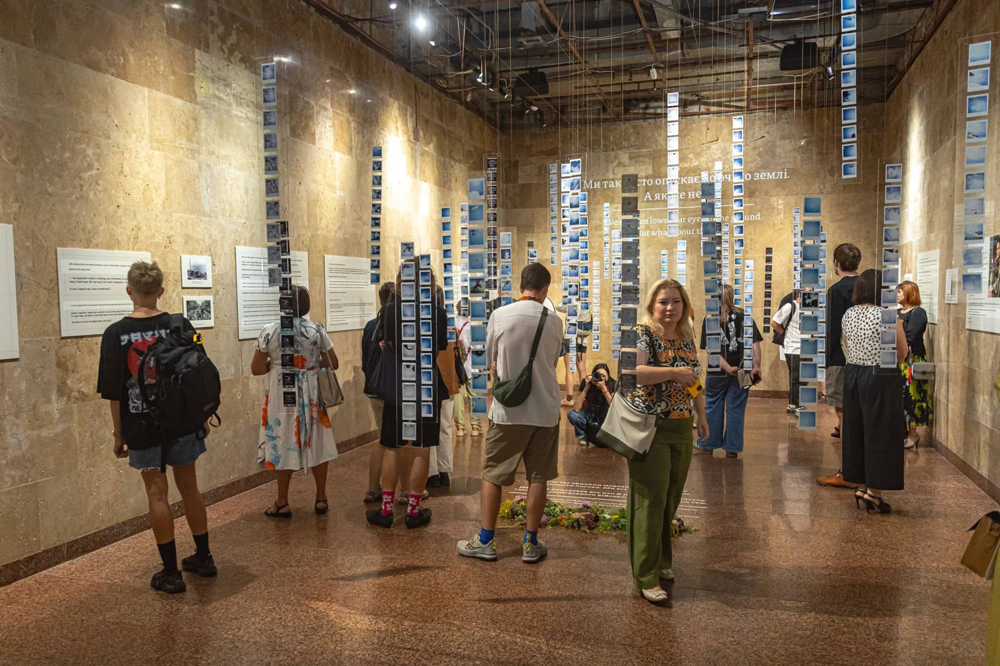

Освіта
Досліджуємо, як діти, підлітки та вчителі сприймають тему памʼяті й якою хочуть бачити розмову про неї в школі. Зараз працюємо над практичними матеріалами для освітян, створюємо документи-опори для роботи з темою памʼяті.

«А чи запитував хтось у дітей, як вони хочуть памʼятати?» – якось подумали ми командою.
Так ми створили опитування для дітей. Але без вчителів виховний процес майже неможливий. Тому в цьому опитуванні ви можете абсолютно анонімно розповісти нам про те, як комфортно памʼятати саме вам.
Зараз ми на етапі дослідження. Тому невдовзі тут зʼявиться документ-опора, аби визначити, як саме працювати з памʼяттю в школах, як дітям комфортно взаємодіяти з темою памʼяті.
Корисні посилання:
Проєкти в межах діяльності
Усі проєктиІнші напрями
Усі напрями-
Військо
Досліджуємо військові ритуали й традиції та шукаємо способи зберігати їхню тяглість у сучасному українському війську. Працюємо над створенням церемоній прощання з військовослужбовцями, які можуть бути адаптовані та впроваджені в громадах по всій Україні.
-

Мистецтво
Використовуємо мистецтво як спосіб говорити про памʼять, людей і наш досвід.